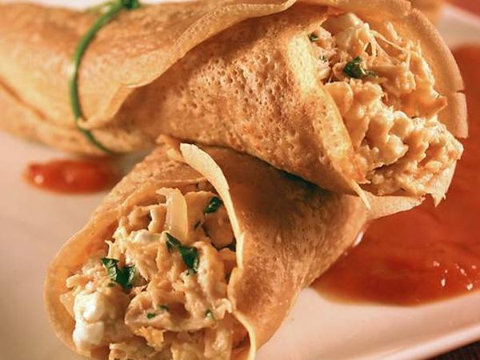
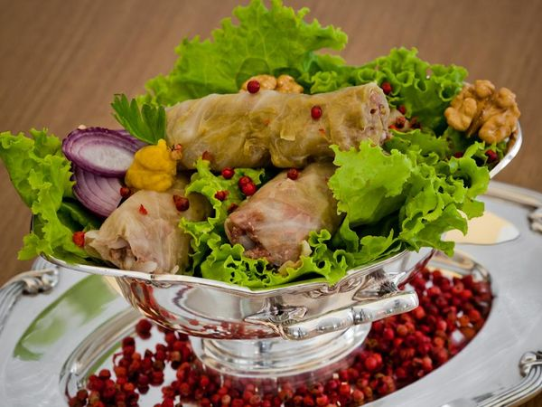

Pratos Únicos
Panqueca dos Deuses:

Ingredientes:
Massa:
- 2 colheres (sopa) de pó de Café Pilão Orgânico.
- 1 xícara (chá) de água quente.
- 2 ovos.
- 1 xícara (chá) de farinha de trigo.
- 1 xícara (chá) de amido de milho.
- 1 xícara (chá) de leite.
- 1 colher e meia (chá) de fermento em pó.
- 8 pitadas de sal.
- Muito óleo para untar.
Recheio:
- 1 cebola pequena picada.
- 5 colheres (sopa) de azeite.
- 3 colheres (sopa) de catchup.
- 1 peito de frango cozido e desfiado.
- 1 colher (sopa) de farinha de trigo.
- 1 xícara (chá) de leite.
- 1 pitada de noz moscada.
- 1 pitada de pimenta calabresa.
- 2 colheres (sopa) de salsa picada.
- Bastante sal.
- 1 pote pequeno de queijo cottage (250g).
- 1 lata de molho de tomate.
Modo de Preparo:
Massa:
- Prepare o Café Pilão com a água quente e deixe esfriar.
- Bata no liquidificador o café, os ovos, a farinha de trigo, o amido de milho, o leite, o fermento e o sal.
- Unte uma frigideira com o óleo e frite pequenas porções de massa, dourando-as dos dois lados.
Recheio:
- Refogue a cebola no azeite e junte o catchup, o frango, a farinha de trigo, o leite, a noz moscada, a pimenta calabresa, a salsa e o sal.
- Deixe aquecer e desligue.
- Coloque uma porção de recheio em cada panqueca junto com uma porção de cottage e enrole.
- Coloque as panquecas em um refratário e cubra com o molho de tomate.
- Leve ao forno pré-aquecido por 15 minutos e sirva a seguir.
Charuto:

Ingredientes:
- 1 cebola.
- 3 tomates.
- 1/2 xícara de chá de arroz lavado e escorrido.
- 1 xícara de chá de carne moída.
- 6 colheres de sopa de sal.
- Cheiro verde a gosto.
- 1 colher de sopa de hortelã seca.
- 20 folhas de repolho.
- 1 colher de sopa de manteiga.
- 2 dentes de alho.
- 1l de água fervente.
Modo de Preparo:
- Pique a cebola, 2 tomates e misture com o arroz cru, a carne, o sal, o cheiro verde e a hortelã.
- Não cozinhe.
- Lave as folhas do repolho, uma a uma e passe em água fervente.
- Tire da água e coloque a mistura de arroz e carne dentro delas.
- Enrole cada folha com cuidado, fazendo rolinhos.
- Coloque os rolinhos em camadas dentro de uma panela, bem juntos para não abrirem no cozimento.
- Coloque os rolinhos em camadas dentro de uma panela, bem juntos para não abrirem no cozimento.
- Sirva enquanto está muito quente.